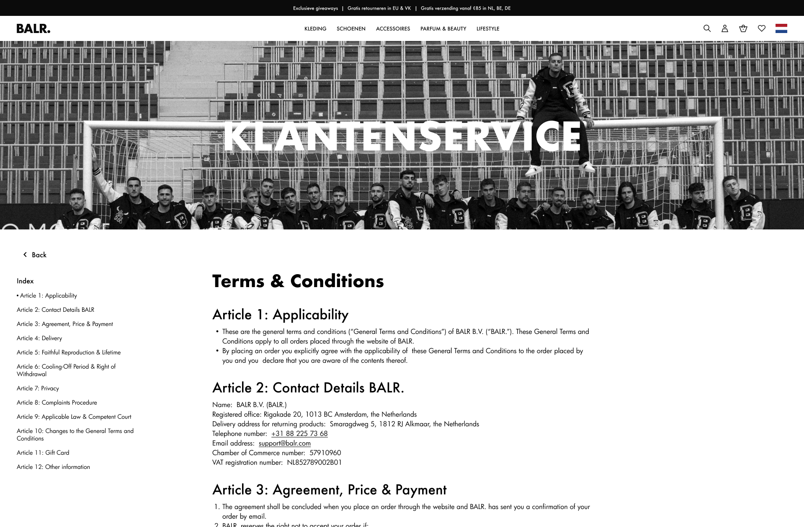

BALR.
04/2025
Ideation
UX
UI
BALR. arrow_outward is an internationally recognized streetwear brand, co-founded by former professional footballer Demy de Zeeuw and two business partners. As part of their Grow Membership at Shopmonkey, we work with BALR. on a continuous basis to develop and improve their website over time.
Their recent focus was on revamping and refining a number of key service and informational pages to better reflect their evolving brand and provide a smoother user experience.
About Page
The original About page served mostly as a placeholder, offering minimal insight into the brand’s story or identity. This gave us the opportunity to redesign it from the ground up.
I focused on embedding the BALR. brand identity more deeply into the page, incorporating bold visuals, sharper storytelling, and featuring recent collaborations with high-profile brands and personalities. The result is a more engaging and on-brand experience that communicates the essence of BALR. to new and returning visitors.
Customer Service
The existing customer service section was very minimal and lacked user-friendly structure. To enhance usability, I introduced a sticky side navigation that allows users to easily jump between different help topics.
I also shortened line lengths for better readability and increased font sizes to improve accessibility across devices. These adjustments help make the content more scannable and user-friendly, reducing potential friction for customers seeking help.
Service Overview
Previously, there was no centralized hub for service-related content. I designed and implemented a new service overview page that organizes all related articles into clear, digestible categories. To further support user navigation and conversion, I added prominent contact options and social links in accessible locations, making it easy for users to find help or reach out when needed.
Update (2025)
BALR. has recently declared bankruptcy. Their sitearrow_outward is down as of 29/09/2025.